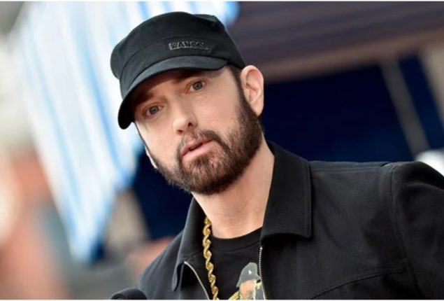
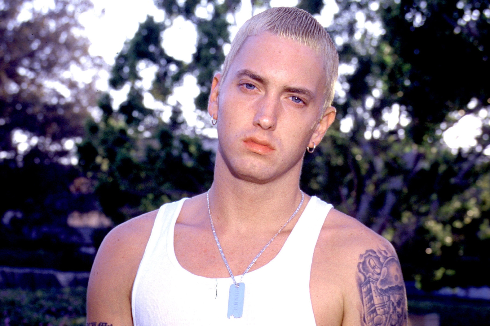
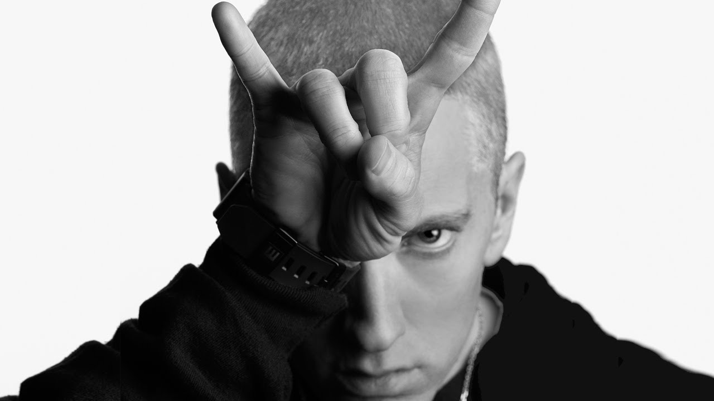
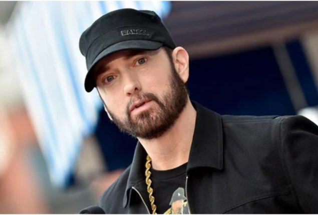
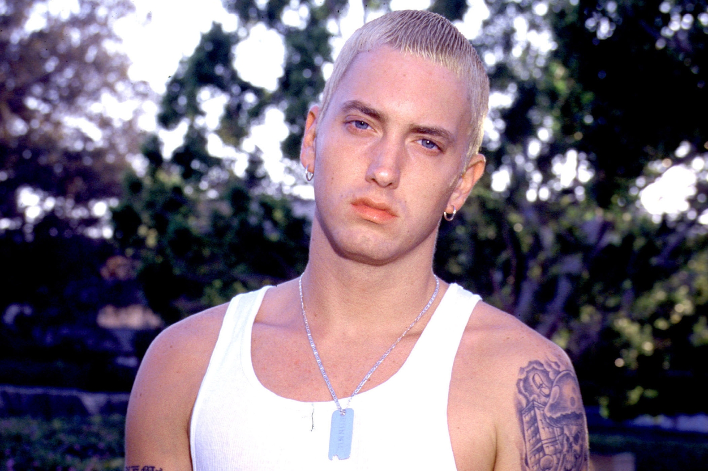
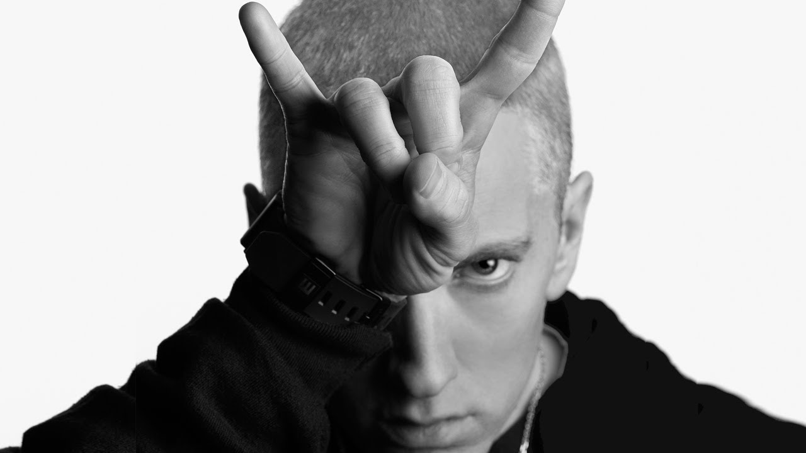

Eminem's most famous songs
Eminem's first song to enter the Billboard Hot 100 was "My Name Is", which was released in 1999 and
became
the
most successful single from The Slim Shady LP. It and "Guilty Conscience" both reached the top 5 in
the
UK.
The lead single from Eminem's third studio album, The Marshall Mathers LP, was the song "The Real
Slim
Shady",
which became his first entry in the top ten of the Billboard Hot 100. The third single from the
album,
"Stan",
featured vocals from British singer Dido, sampled from her song "Thank You". "Stan" was the album's
most
successful single outside of the States, while it failed to reach the top 50 in Eminem's home
country.
In 2002, Eminem released the singles "Without Me" and "Cleanin' Out My Closet" from his album The
Eminem
Show,
as well as the single "Lose Yourself" from the 8 Mile soundtrack, which became his first number one
song
on
the
Hot 100 and remained on the top for 12 weeks. The song also reached the top of various national
charts
worldwide.
In 2009, the song "Crack a Bottle", a collaboration with label-mates Dr. Dre and 50 Cent, became
Eminem's
second
number one on the Hot 100 and broke the record for opening week download sales in the US, with
418,000
copies
sold in the first week.
Recovery's singles "Not Afraid" and "Love the Way You Lie" featuring Rihanna, both released in 2010,
became
Eminem's third and fourth number one songs on the Hot 100; the latter also reached the top of
various
national
charts worldwide. In June 2014, his song "Not Afraid" was diamond certified by the RIAA, thus making
Eminem
the
first artist with two digital diamond awards by RIAA.
In August 2013, Eminem released the single "Berzerk" which debuted number 3 on the Billboard Hot 100
and
preceded his eighth studio album The Marshall Mathers LP 2. The album spawned the singles
"Survival",
which
was
showcased during the Call of Duty: Ghosts reveal trailer, "Rap God", and "The Monster" featuring
Rihanna.
"The Monster" became Eminem's fifth No. 1 single on the Hot 100, tying him with rappers Ludacris and
P.
Diddy
for rappers with the most No. 1 singles in the US. In May 2014, Eminem was announced as the
most-streamed
artist
of all time on Spotify.
From 2017 to 2020, Eminem released various hit singles, including "River" featuring Ed Sheeran,
"Lucky
You"
featuring Joyner Lucas, "Killshot", and "Godzilla" featuring Juice Wrld. The latter two debuted at
number 3
on
the Billboard Hot 100.